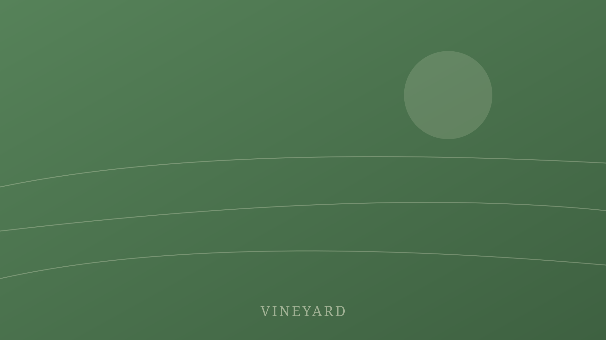
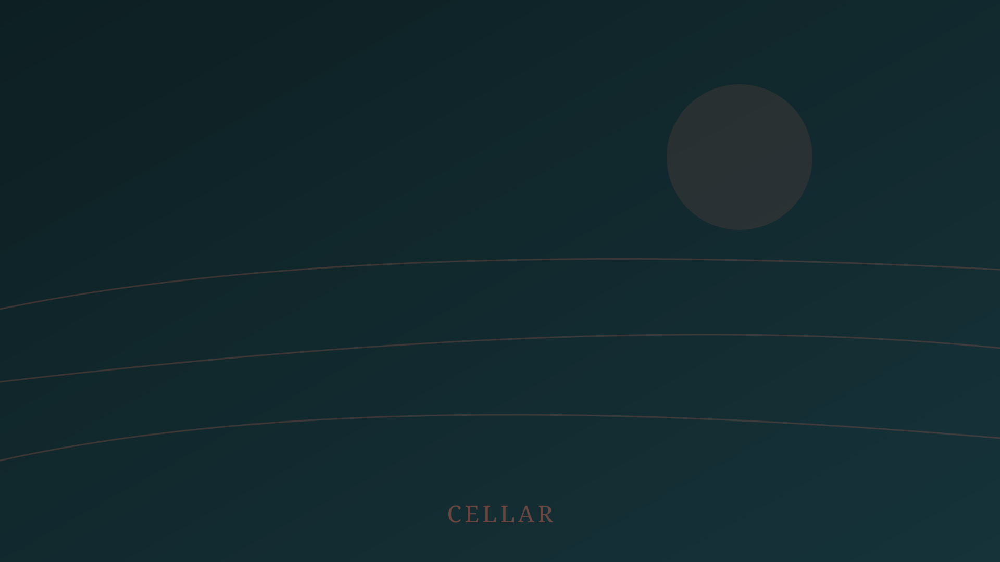

Picking in the dark
The crush pad lights go on at half past three in the morning and the first bins are in by five. It looks like theatre and it is entirely practical: fruit picked cold arrives cold, and fruit that arrives cold does not start fermenting in the bin on the way down the hill.
Why the hurry
Sugar climbs through the afternoon and acid falls with it. A row picked at two in the afternoon and a row picked at four in the morning are, for our purposes, two different vineyards. So we pick at four.
The side effect is that anyone staying in the Vintner's Quarters in September is awake at four too. We tell people. Some of them book it deliberately.

What it costs
Night picking needs lights, a generator, and a crew willing to work a shift that ends when most people start theirs. It is more expensive per ton than any other decision we make, and it is the one we argue about least.
You cannot un-warm fruit. Everything after the pick is damage control.
By nine in the morning the pad is hosed down and quiet, and the only evidence is the smell, which stays until roughly November.